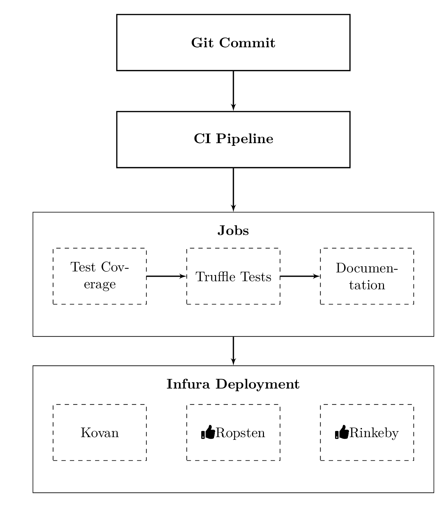

\documentclass[border=10pt]{standalone}
\usepackage{fontawesome5}
\usepackage{tikz}
\usetikzlibrary{fit,arrows,calc,positioning}
\begin{document}
\tikzstyle{block} = [rectangle, draw, fill=white,text width=16em, text centered, minimum height=4em, thick]
\tikzstyle{blks} = [rectangle, draw, fill=white, text width=6em, text centered, minimum height=4em, dashed]
\tikzstyle{big} = [rectangle, draw, inner sep=0.5cm]
\tikzstyle{line} = [draw, -latex',thick]
\begin{tikzpicture}[auto]
\node [block](exe) {\textbf{Git Commit}};
\node [block, below=of exe] (mgm) {\textbf{CI Pipeline}};
\node [blks, below=2cm of mgm] (fin) {Truffle Tests};
\node [blks, right=of fin] (prod) {Documentation};
\node [blks, left=of fin] (resch) {Test Coverage};
\node[above =0.2cm of fin] (A) {\textbf{Jobs}};
\node [below = 0.3 of mgm, big,fit=(fin) (prod)(resch)(A), inner sep=0.5cm] (dept) {};
\node [blks, below=2.5cm of fin] (ropsten) {\faThumbsUp Ropsten};
\node [blks, right=of ropsten] (rinkeby) {\faThumbsUp Rinkeby};
\node [blks, left=of ropsten] (kovan) {Kovan};
\node[above =0.2cm of ropsten] (B) {\textbf{Infura Deployment}};
\node [below = 0.3 of mgm, big,fit=(ropsten) (rinkeby)(kovan)(B), inner sep=0.5cm] (infura) {};
\path [line] (exe)--(mgm);
\path [line] (mgm) -- (dept);
\path [line] (resch)--(fin);
\path [line] (fin)--(prod);
\path [line] (dept) -- (infura);
\end{tikzpicture}
\end{document}Created by David Li